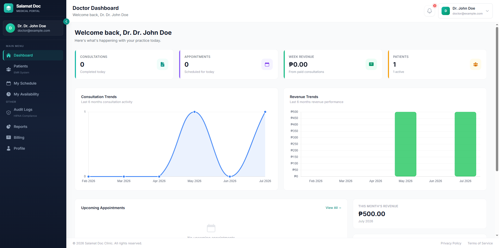

Thesis project
Online Integrated Information System for SalamatDoc Clinic
A clinic management system for patient records, appointments and consultations. As thesis project lead I handled everything from requirements gathering to deployment.